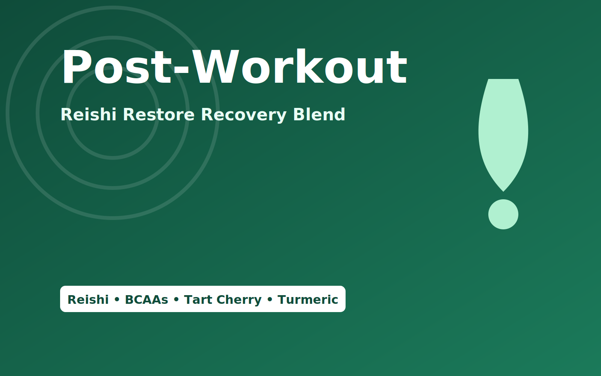

Reishi Restore Recovery Blend
From ฿920 • 20 servings
Muscle rebuild support with BCAA 2:1:1, anti-inflammatory botanicals, and adaptogens for calm recovery.
- Reishi 500 mg (30% polysaccharides)
- BCAA 2:1:1 5,000 mg
- Tart Cherry 500 mg • Turmeric 500 mg + Piperine 5 mg
- Ashwagandha 300 mg • MCT 2,000 mg